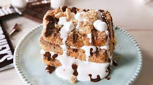

S'mores French Toast

Description
Nothing makes you feel like a kid again more than eating s’mores. That combo of chocolate, graham crackers, and marshmallows is hard to resist, even as an adult.
With S’mores French Toast you can enjoy the flavor of s’mores for breakfast. No campfire needed.
Ingredients
- 3 slices French Bread
- 2 eggs lightly beaten
- 2/3 cup milk
- 1 teaspoon vanilla extract
- 1/4 teaspoon salt
- 1 cup graham cracker crumbs
- butter
- 6 large marshmallows cut in half
- 2 full-size Hershey bars broken into rectangles
- maple syrup and/or fudge sauce for serving
Steps
- In a shallow bowl or pie plate, whisk together eggs, milk, vanilla, and salt.
- Dip bread into egg mixture, coating each side.
- Press both sides of bread into graham cracker crumbs.
- Melt about 1/2 tablespoon of butter on a griddle or nonstick pan for each slice of bread. Cook until brown and crispy, then flip to other side, adding a little more butter to pan first.
- While still hot, stack the slices of french toast, layering marshmallows and chocolate in between.
- Cut in half for 2 servings